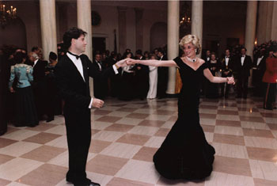

Princeza Dajana, 10 godina kasnije
"She was wearing what fashion editors would later call among themselves "her fuck-you dress," a short, sexy, off-the-shoulder black chiffon number with a scarf panel wafting from the waist, and black silk high-heeled Manolo Blahnik shoes. The dress's previously obscure Greek designer, Christina Stambolian, told the fashion commentator Georgina Howell that the Princess "chose not to play the scene like Odette, innocent in white. She was clearly angry. She played it like Odile, in black. She wore bright red nail enamel, which we had never seen her do before. She was saying, 'Let's be wicked tonight!'
(Na slici je druga haljina, koja je kasnije, kad se razvela, prodata za više od 200 hiljada dolara. Slika, sa Džon Travoltom, snimljena je 1985. u Beloj kući).
Ovo gore je jedan opisno-analitički pasus iz knjige Tine Brown (nekadašnje urednice Vanity Fair i New Yorkera) o princezi Dajani. [ima li svaka žena svoju fuck-you dress, pitam se?].
Ta knjiga, izašla početkom leta, već se uveliko visoko kotira na listama bestselera. I samo je jedna u nizu objavljenih o Dajani prethodnih godina.
Ovih dana u raznim medijima pojavili su se tekstovi-analize zašto je ona tako medijski i marketinški privlačna i sada, deset godina nakon smrti. BBC je nasvom sajtu objavio da se Dajana u britanskoj štampi, tokom prethodne decenije, pominjala u proseku u osam hiljada tekstova godišnje. Na petogodišnjicu njene smrti, 2002. godine, broj takvih tekstova porastao je na 12 hiljada. 1997. bilo ih je 15 hiljada. Ove godine već sedam.
Dok je bila živa, njeno pojavljivanje u časopisu dizalo je prodaju za 20 do 50 posto, kaže urednik časopisa Hello. Princ Vilijam i Bekamovi su najbliži njenoj medijskoj atraktivnosti, a nova-stara devojka princa Vilijama ima potencijal da u tom pogledu nasledi Dajanu.
Njujork Tajms, analizirajući medijsku situaciju u Americi, piše da je Dajana na putu da se pridruži Merlin Monro, Elvisu i Džonu Kenediju po pažnji koju mediji posvećuju i nakon smrti i po marketinškom potencijalu proizvoda vezanih za lik ili ime.
A urednik magazina People za NYT kaže: "Can you imagine what Diana would have been in this Internet, blogging, Paris Hilton kind of world?"
Hm, šta? Pisala bi blog, vozila prebrzo, snimila album, usvojila dete, napravila modnu kolekciju pod svojim imenom, učestvovala ili kreirala reality show, nastavila sa humanitarnim aktivnostima? Nema tu baš mnogo opcija, kao što zna ceo celebrity world i njegovi hroničari.
Ovako, ostala je upamćena, i istraživanja to pokazuju, koliko zbog svog izgleda i ljubavnog života, toliko i zbog humanitarnih aktivnosti ili, preciznije, zbog stavljanja u žižu javnosti problema koji su ranije bili polu-potisnuti.
Plus:
Koncert za Dajanu koji su u julu organizovali prinčevi Vilijam i Hari i prilog o tome na
BBC.
I još: Sva sreća te kod nas, bar koliko znam, još nikome nije palo na pamet da sebe nazove novom Dajanom, kao što je to slučaj sa Grejs.
 RSS feed
RSS feed
Komentari
Ja se tacno secam gde sam bila i sta sam radila kad su javili da je Lejdi Daj poginula. (f-you haljinu imam ali mi je malo mala...khm)
feisty k | 31.08.07 07:19
Sigurno ne bi bila poznata i zapamcena po kucnom uradku
ljubar | 31.08.07 07:41
I ja se savrseno secam svega. A za haljine generalno mislim da su naj-naj garderoba i trudim se da uvek imam bar jednu killer dress
la lara | 31.08.07 07:44
'be a woman, wear a dress' sto rece dajen fon furstenberg.
kitten | 01.09.07 04:04